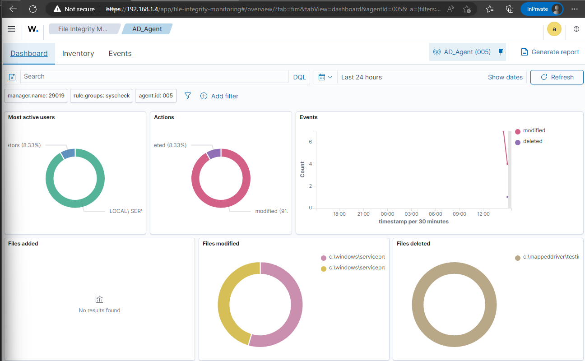
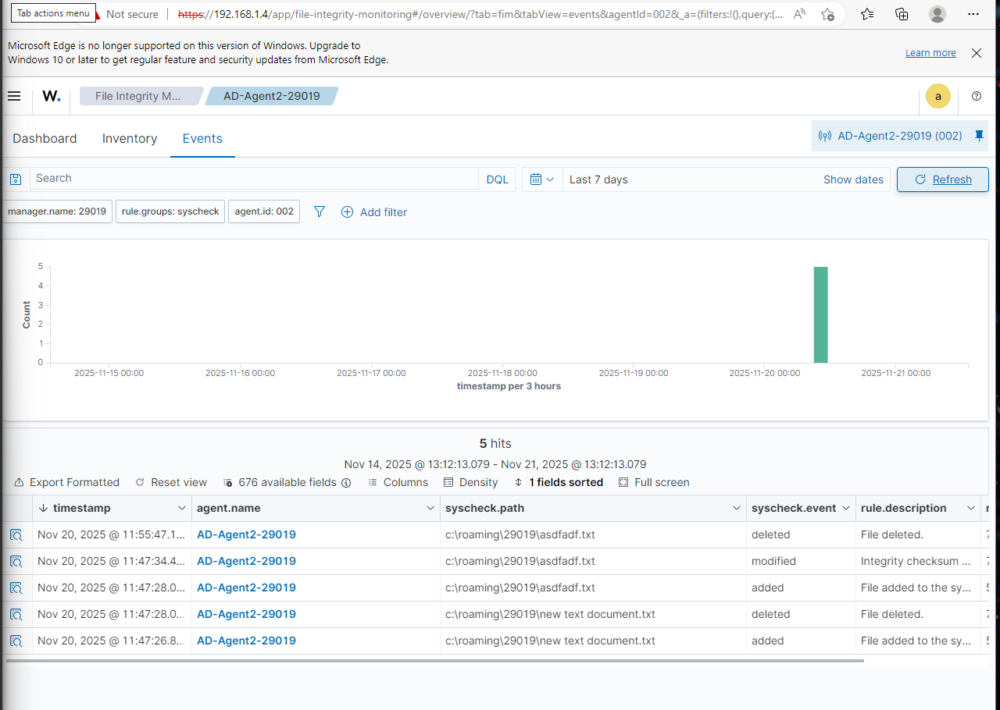
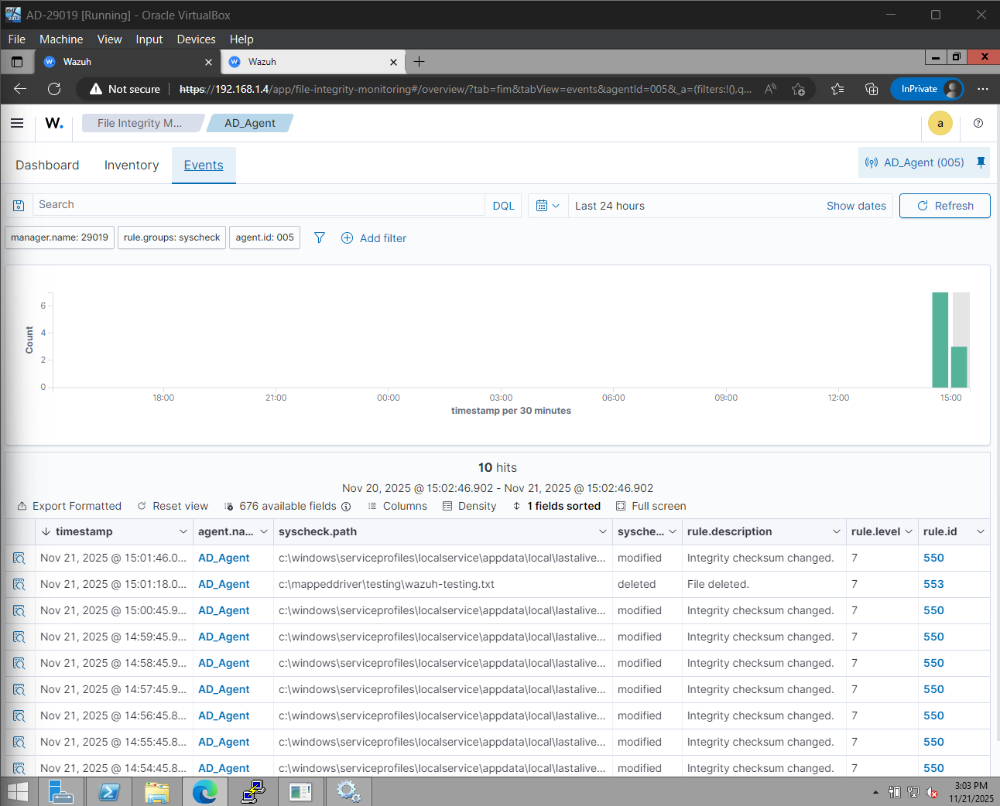
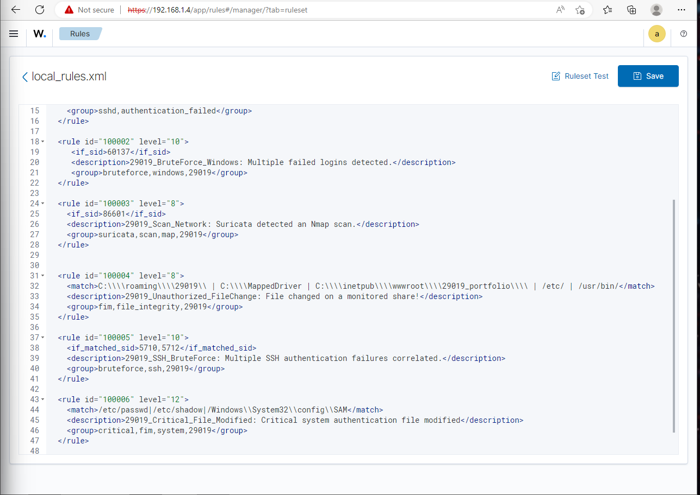

Navigation
Wazuh Manager (SIEM) and IDS Integration
This section provides evidence for Task 4 (Wazuh deployment, logging, and FIM) and Task 5 (Suricata IDS integration and custom detection rules).
1. Wazuh Manager Setup and Agents
Wazuh Login Screen
The login screen for the Wazuh manager interface, confirming the successful deployment of the OVA (4.14.0) and web access.

Agent Status and Connectivity
The Agents tab confirms all required endpoints are enrolled and active: the Domain Controller, Linux Documentation Server, and client PCs. This centralized monitoring is key.

Log Ingestion Verification
The dashboard view shows incoming logs, including Windows Events and syslogs forwarded from pfSense, confirming the successful ingestion of security data from all network devices.
2. File Integrity Monitoring (FIM)
FIM Configuration for AD/GPO Paths
Evidence of the `ossec.conf` file snippet or the manager configuration confirming the monitoring of critical paths, specifically the network-mapped drives and roaming profile folders (e.g., `\\fileserver\roaming\...`).
FIM Alert Triggered
A controlled test demonstrates the FIM service working: a file was modified in a monitored network share, generating a high-severity alert in the Wazuh console.
3. IDS and Custom Rules
Custom Local Rules
The custom rules file (`local_rules.xml`) includes the student-ID-specific rules, such as `StudentID_BruteForce_Windows` and `StudentID_Scan_Network`, designed to correlate alerts and adjust severity.
Suricata/IDS Alert (Correlation Proof)
This evidence (often a duplicate of an earlier Kali test screenshot, but included here for context) shows a Suricata (IDS) alert correlated and presented in the Wazuh dashboard, proving successful EVE JSON ingestion and detection capabilities.